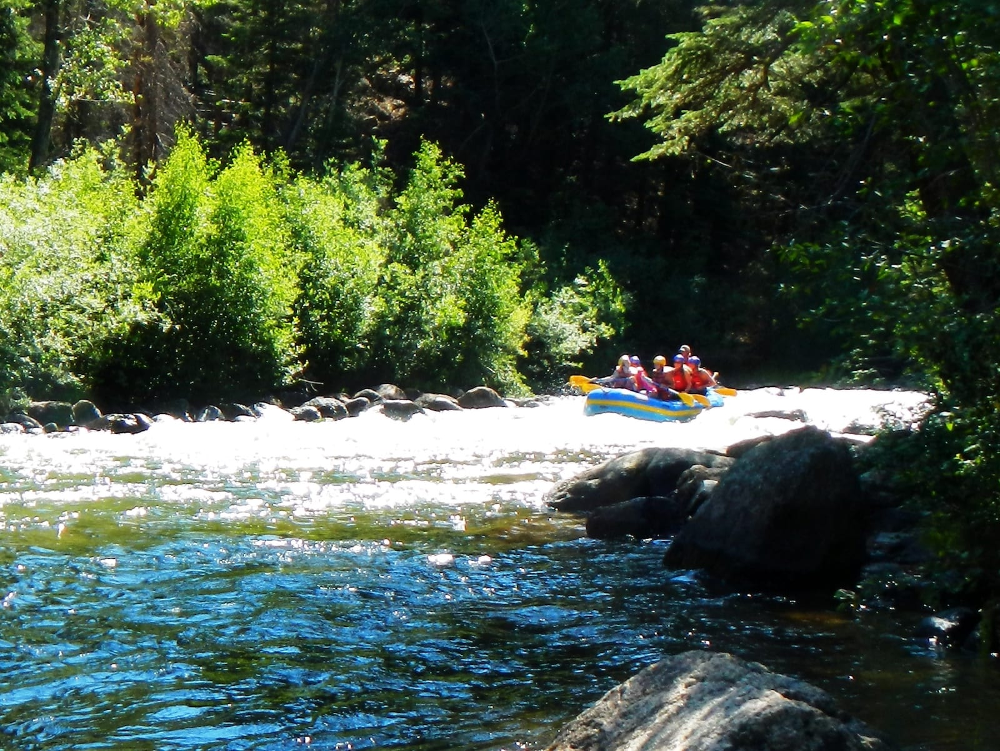
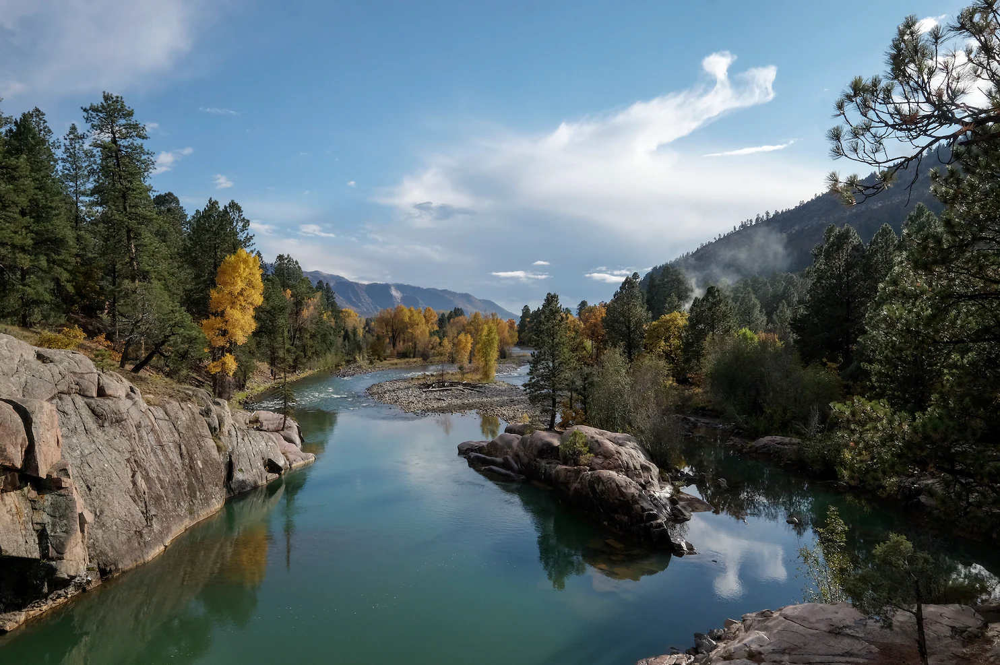
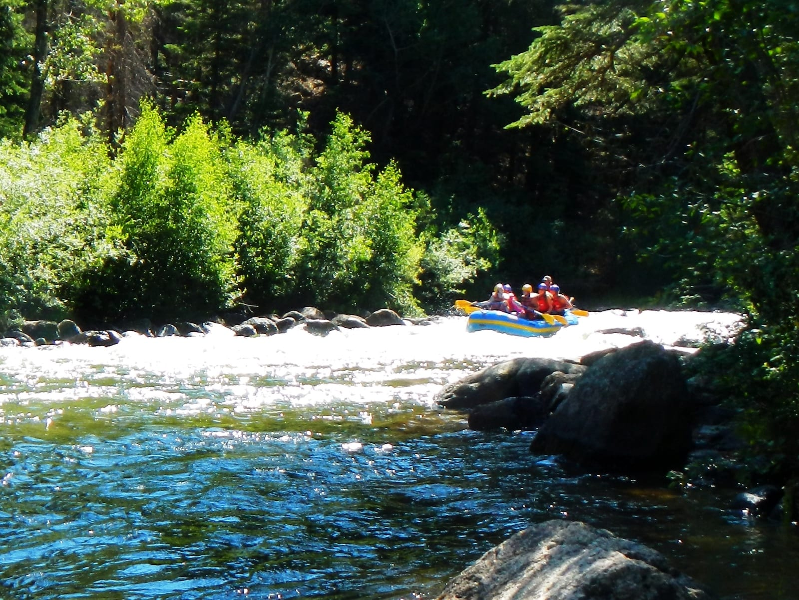
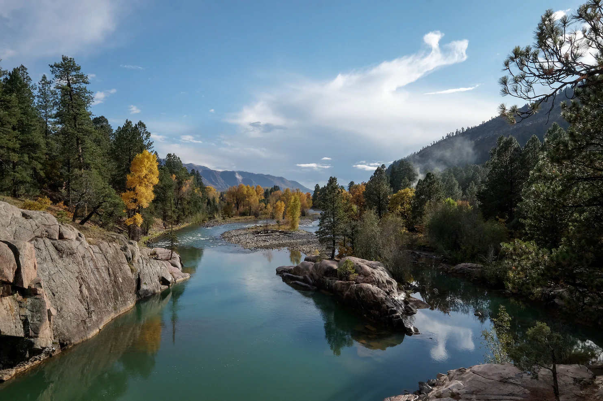

Rivers
____________________________________________________________________________________________________________________________________________
Know more about some of the rivers Dry Oar manages.
 The Colorado River is one of the principal rivers (along with the Rio Grande) in the Southwestern United States and northern Mexico. The 1,450-mile-long (2,330 km) river drains an expansive, arid watershed that encompasses parts of seven U.S. states and two Mexican states.
About 40 million people depend on the Colorado River's water for agricultural, industrial and domestic needs. The Colorado irrigates 5.5 million acres (2.2 million hectares) of farmland, and its hydroelectric plants produce 12 billion kilowatt hours (KWh) of hydroelectricity each year.

The Taylor River rises close to Castle Peak in Colorado's Elk Mountains in the northeast part of Gunnison County, the Taylor River is 48.2 miles long. this river is a local favorite for rafting and fishing.
The Taylor River begins near Crystal Peak in the Gunnison National Forest, It proceeds through more of the national forest before it ends in the town of Almont, where it combines with the East River to create the Gunnison River.

The Animas river rises in the San Juan mountains and runs 126 miles through Colorado and New Mexico before dumping into the San Juan River in Farmington, NM. Along this 126 mile course the Animas river fills Lake Nighthorse, a reservoir that serves the Southern Ute tribal area.
Visitors to Durango can follow the river via a walking trail that has been built on the side of the river. This trail offers excellent views of the canyon and of the river and is an excellent place for a relaxing stroll or bike ride.
The Colorado River is one of the principal rivers (along with the Rio Grande) in the Southwestern United States and northern Mexico. The 1,450-mile-long (2,330 km) river drains an expansive, arid watershed that encompasses parts of seven U.S. states and two Mexican states.
About 40 million people depend on the Colorado River's water for agricultural, industrial and domestic needs. The Colorado irrigates 5.5 million acres (2.2 million hectares) of farmland, and its hydroelectric plants produce 12 billion kilowatt hours (KWh) of hydroelectricity each year.

The Taylor River rises close to Castle Peak in Colorado's Elk Mountains in the northeast part of Gunnison County, the Taylor River is 48.2 miles long. this river is a local favorite for rafting and fishing.
The Taylor River begins near Crystal Peak in the Gunnison National Forest, It proceeds through more of the national forest before it ends in the town of Almont, where it combines with the East River to create the Gunnison River.

The Animas river rises in the San Juan mountains and runs 126 miles through Colorado and New Mexico before dumping into the San Juan River in Farmington, NM. Along this 126 mile course the Animas river fills Lake Nighthorse, a reservoir that serves the Southern Ute tribal area.
Visitors to Durango can follow the river via a walking trail that has been built on the side of the river. This trail offers excellent views of the canyon and of the river and is an excellent place for a relaxing stroll or bike ride.
____________________________________________________________________________________________________________________________________________
________________________________________________________________________________________________________________________________________________

.png)